A 4-part MiniMax H3 Ref2VA original story: Yasha (winged demon-horned girl, violet-white
magic) vs Kurenai (fox-masked girl, red spectral-fox aura) — first clash, climax duel, and a
title/credits outro. Built and QA'd using this repo's own skills (reelbench-skills,
story-wizard, melies-cinematic-library). Static snapshot (no embedded
video — clips aren't stored in-repo). The final accepted prompt for each part is in
part1-prompt.md through part4-prompt.md; the full interactive reports
with playable clips and scene-change charts are published live:
Part 1 thumbnails below are illustrative frames from an earlier v3 generation round of the prompt, not a frame-by-frame verified analysis of the final accepted v6 prompt — Part 1 predates this session's frame-analysis workflow, so no dense QA pass exists for it here.
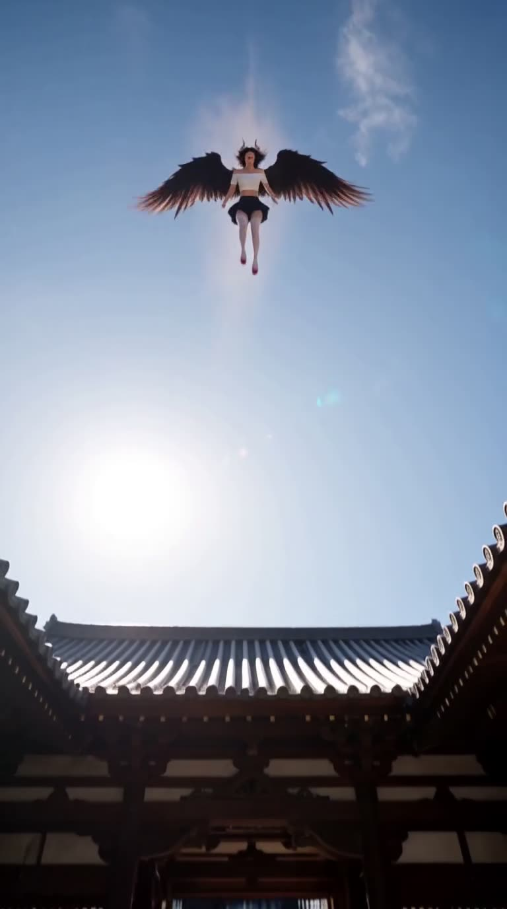
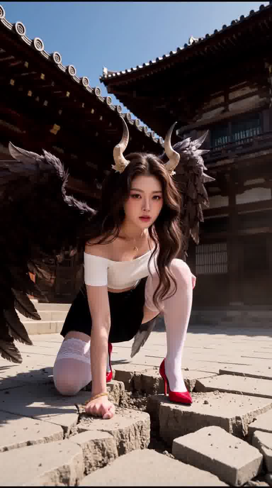
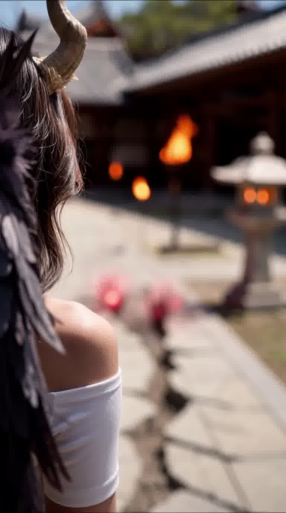
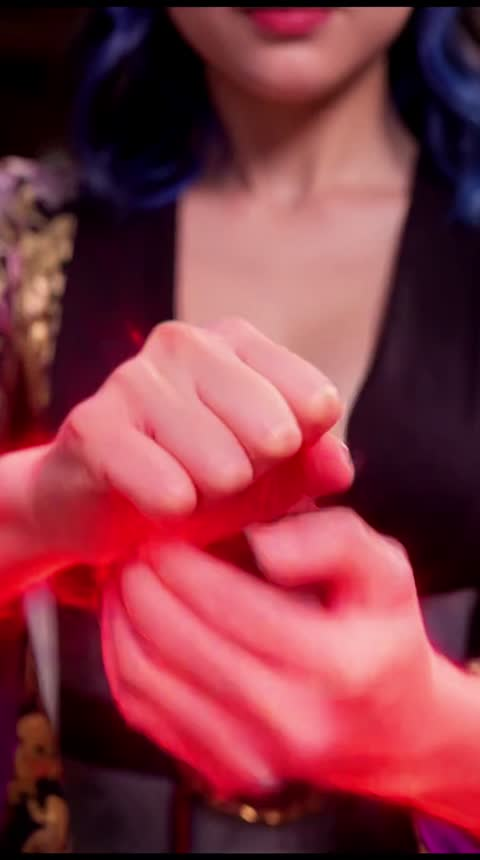
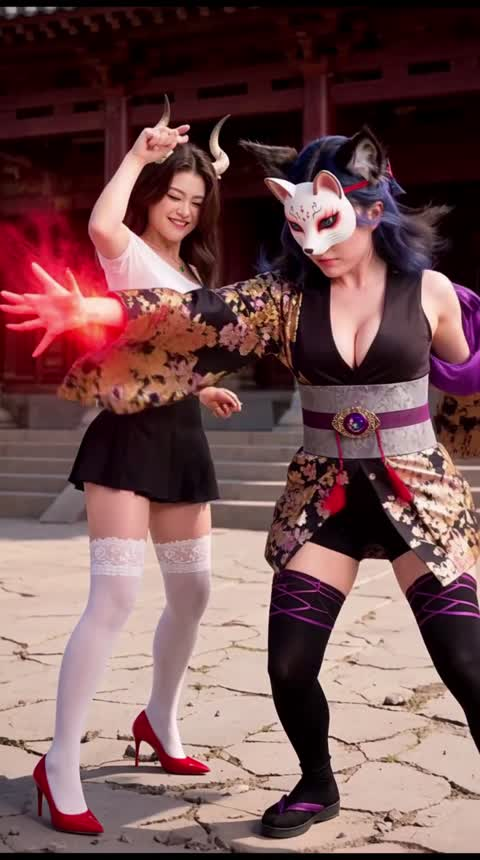
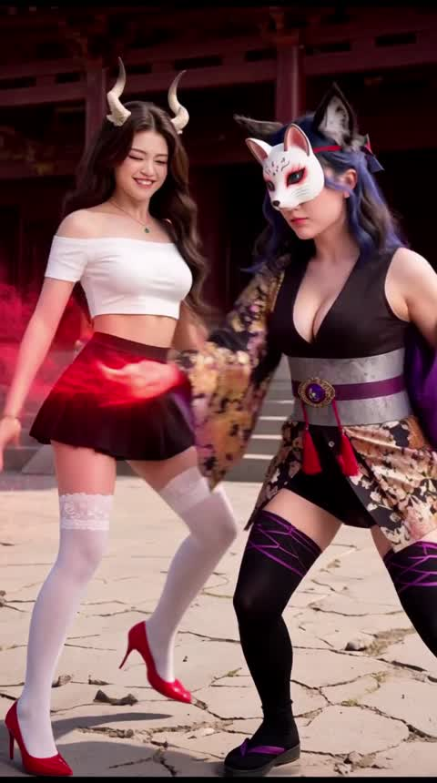
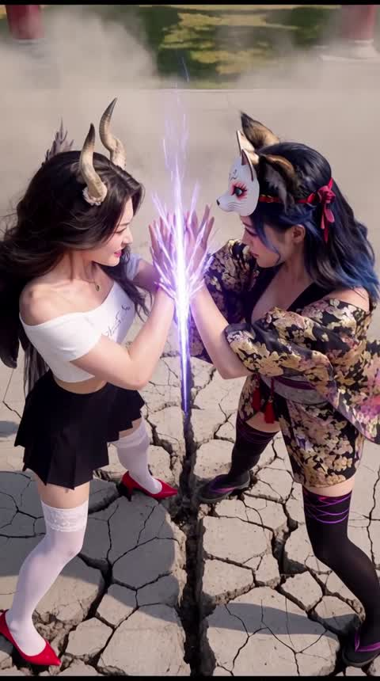
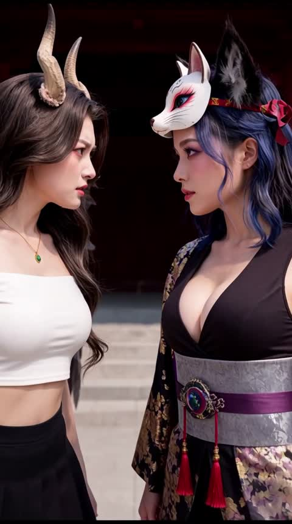
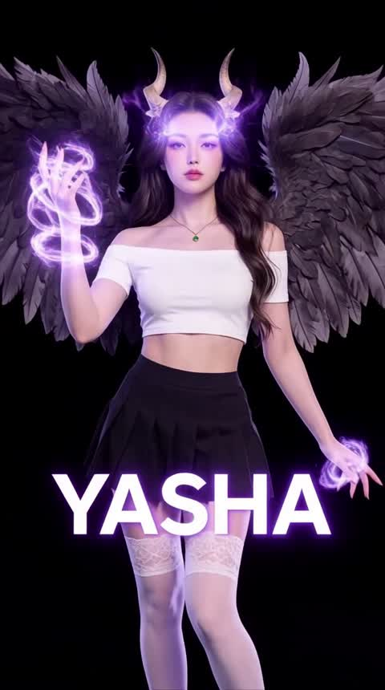
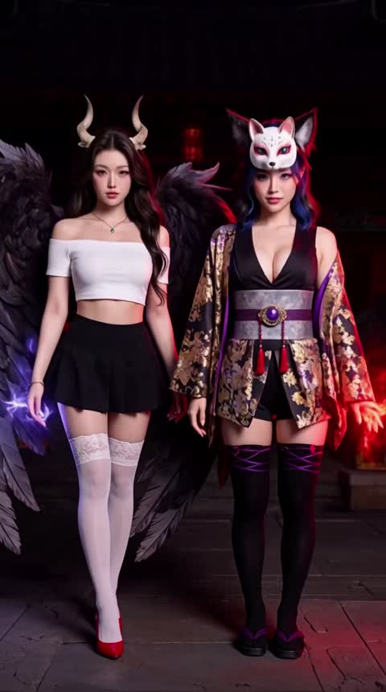
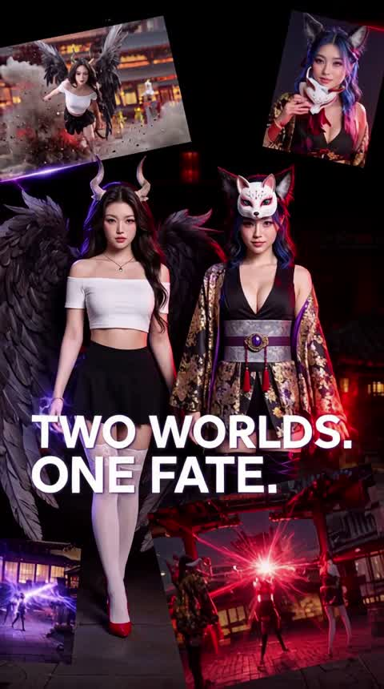
Part 2's clash shot needed two rewrites: v1 rendered empty (Kurenai never
entered the shot), v2 rendered as a static, weightless hand-clasp with no consequence. v3 fixed
this by adding a low/canted camera push, a freeze-frame + Light Flash combo, dust particles
catching the glow, and courtyard bounce light — techniques documented in the new
references/combat-environment-reactivity.md reference, sourced from
melies-cinematic-library.
Part 3's climax needed a full rewrite from v1 (flat, no camera variety, no
named techniques) to v2 (11 shots, dutch-angle whip-pans, worm's-eye power-ups, named ultimate
techniques). v2 then showed two near-frozen shots (Shot 8 standoff, Shot 11 aftermath) with eyes
reading toward the camera instead of each other — root-caused to "held/locked/sustained" language
being read literally as static by the model. v3 fixed both by describing continuous incremental
motion (trembling, crack-widening, camera creeping) and adding explicit "never look toward the
lens, eyes locked on each other" language at both the global and per-shot level — verified via
dense frame sampling with the new scripts/timeline_view.py tool.
Part 4's outro corrected placeholder character/channel names (v1's "YOUKO" / "PRODUCTION BY IIMATE2485" → v2's "KURENAI" / "PRODUCTION BY IIMATE24") and added confident power-display pose language for both characters per the user's explicit request.
| Part | Result |
|---|---|
| Part 1 (establishing, v6 final) | not re-analyzed this session — thumbnails shown are from an earlier v3 round only |
| Part 2 (first clash, v3 final) | PASS (not perfect) — accepted by user with known minor warns (smiling during combat, early frame exit) |
| Part 3 (climax duel, v3 final) | PASS — frozen-shot and eye-contact issues resolved; one new warn (Light Flash timing drifted ~1.9s early) |
| Part 4 (title/credits outro, v2 final) | PASS — names corrected, power-display poses added, accepted by user |